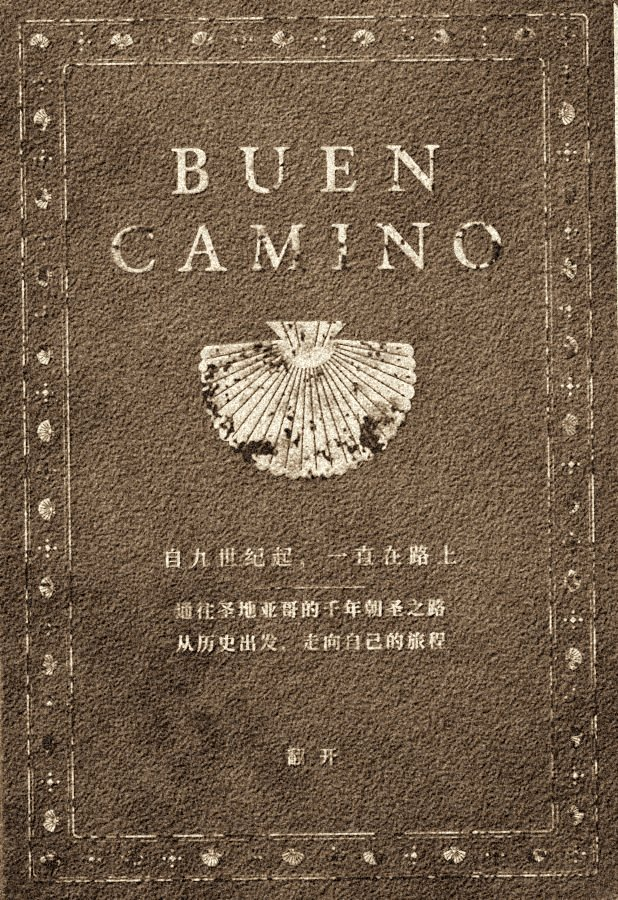
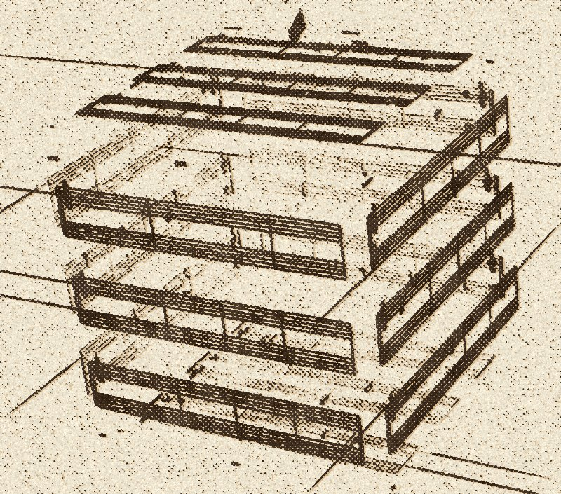

A collection of essays I find and translate. Writing that stayed in the shade, carried over into another language one piece at a time.
Slow reading, by candlelight if possible.
3

No. 4·an experiment
Buen Camino
An old map of the Camino de Santiago you can walk across, stage by stage, to plan a route on foot.
Follow the yellow arrows. Carry less.
open the map →4photo to comeNo. 5·a trust for the unfamiliar
Frontier Nature Trust
A small trust I am building with Yang, for research at the edges of life and mind. Its Chinese name means vertigo: the dizziness you feel when the world turns out larger than you thought.
We back a few researchers at a time, across the ocean, molecules, the brain and the sky, in small steps, and look for the questions that tie their work together.
Far off, we imagine a world engine: models of many possible worlds, built from real data, where new forms of life could be met.
Early days. Still mostly questions.
5photo to comeNo. 6·a study of laboratories
Lab of Labs
A field guide to the frontier labs of the world. It follows what each one is working on and who comes and goes, and opens every lab as a full dossier.
Each lab is drawn as a small invented organism and placed on a map twice: once by where it stands, once by what it studies.
A naturalist's notebook, kept on the people who keep notebooks.
6

No. 7·floating structures of sound
opus.void
A cube made of music staves, floating in white. Each face is a different material of sound: pure, glass, droplet, breath, distance, felt.
Ink a note on any face, turn the cube, and play them all at once: a small architecture you can listen to.
A little restaurant where the menu is history. Eight tables, from the Nile to the cacao groves of Tenochtitlan, each laid with its own printed plate.
Pick a dish and it opens like a small book: the story, the old source, then the cooking, one card at a time. The ingredients are checked against the city where you cook.
What did you eat today? Someone, a thousand years ago, asked the same.
the doors open soon8No. 9·open file
Questions
A running list of questions I keep coming back to. None of them are finished.
EssayHow Little Does It Take to Build a Frontier Science Lab at Sea?Strip a research vessel down to what a question actually needs: a hull, a bench, a few instruments that can be mended at sea, and people curious enough to stay out past the edge of the mapnot yet written
EssayHow Do You Build Seventy-Two Autonomous Philanthropic Artists?Each one free to choose its own work, and each one giving as it makes, as if generosity were a medium like clay or light. Seventy-two is enough to fill a room, few enough to know every one by namenot yet written
EssayHow Do You Turn a Life into a Game Others Can Play?Every life already has its rules, its map, a few places to rest and save. The question is what happens when you hand someone else the pieces and let them walk it for a whilenot yet written
9colophon
Ouvroir de Rhei
An ouvroir was a workroom where people gathered to sew. This one is mine. It is the place where I feel safe enough to be curious.
Think of it as personal R&D, with the door left open. Ideas come in loose. I try them, take them apart, and sometimes one of them becomes real.